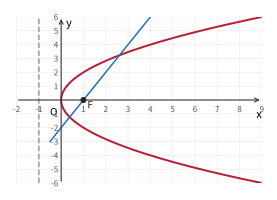
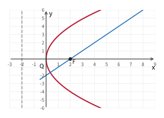
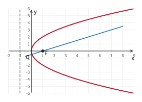

別冊練習問題 9 の解答 放物線の焦点を通る弦の長さ
(1) 放物線 \(y^2=4x\) の焦点を通り、傾き \(2\) の直線が放物線と交わる2点を \(A,B\) とする。弦 \(AB\) の長さを求めよ。
焦点と直線
放物線 \(y^2=4x\) の焦点 \(F(1,0)\)。直線 \(y=2(x-1)\)。

交点の x 座標
\[4 X^{2} - 12 X + 4=0\ \Rightarrow\ x=- \dfrac{\sqrt{5}}{2} + \dfrac{3}{2},\ \dfrac{\sqrt{5}}{2} + \dfrac{3}{2}\]
弦の長さ
焦点を通る弦は \(AB=x_1+x_2+2p\)（準線までの距離の和）。
\[AB=3+2=5\]【答案】
\[5\]答
(2) 放物線 \(y^2=8x\) の焦点を通り、傾き \(1\) の直線が放物線と交わる2点を \(A,B\) とする。弦 \(AB\) の長さを求めよ。
焦点と直線
放物線 \(y^2=8x\) の焦点 \(F(2,0)\)。直線 \(y=1(x-2)\)。

交点の x 座標
\[X^{2} - 12 X + 4=0\ \Rightarrow\ x=- 4 \sqrt{2} + 6,\ 4 \sqrt{2} + 6\]
弦の長さ
焦点を通る弦は \(AB=x_1+x_2+2p\)（準線までの距離の和）。
\[AB=12+4=16\]【答案】
\[16\]答
(3) 放物線 \(y^2=4x\) の焦点を通り、傾き \(\dfrac{1}{2}\) の直線が放物線と交わる2点を \(A,B\) とする。弦 \(AB\) の長さを求めよ。
焦点と直線
放物線 \(y^2=4x\) の焦点 \(F(1,0)\)。直線 \(y=\dfrac{1}{2}(x-1)\)。

交点の x 座標
\[\dfrac{X^{2}}{4} - \dfrac{9 X}{2} + \dfrac{1}{4}=0\ \Rightarrow\ x=- 4 \sqrt{5} + 9,\ 4 \sqrt{5} + 9\]
弦の長さ
焦点を通る弦は \(AB=x_1+x_2+2p\)（準線までの距離の和）。
\[AB=18+2=20\]【答案】
\[20\]答